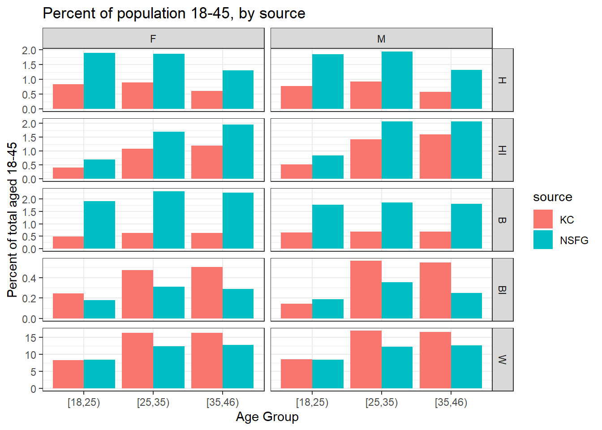
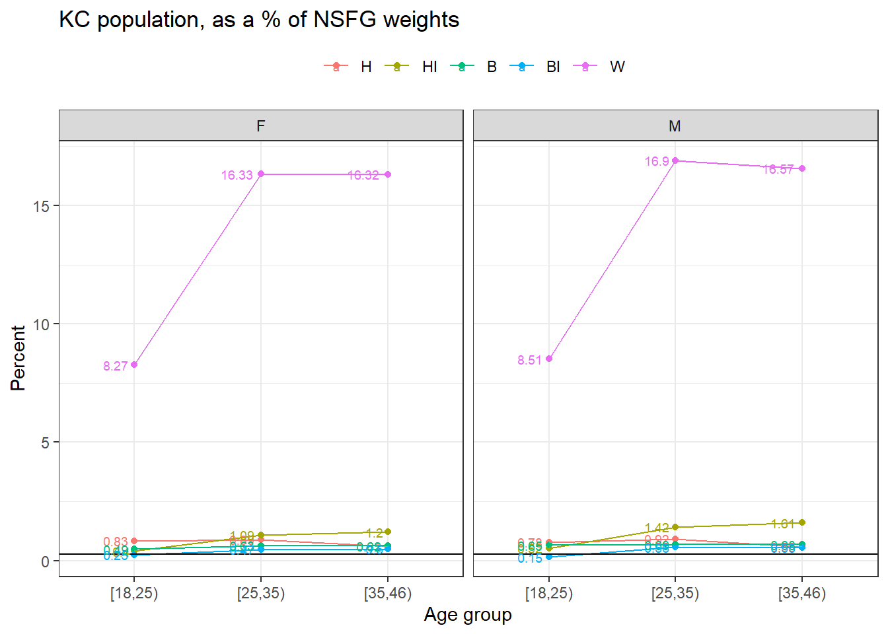
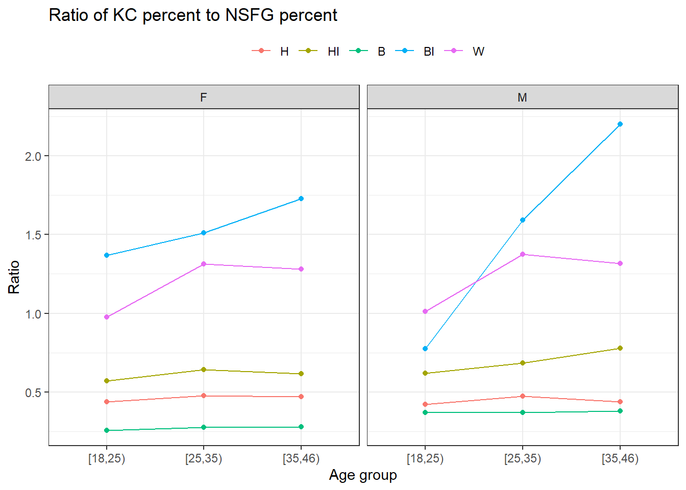
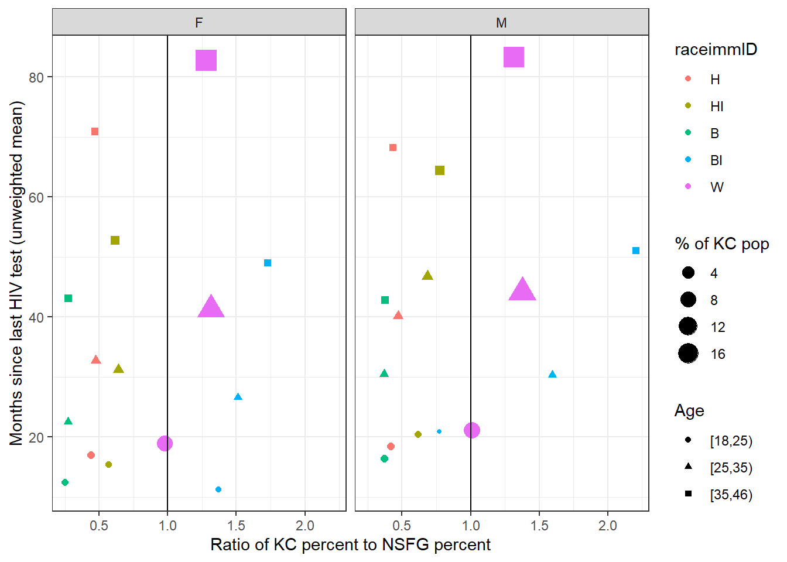

Chapter 3 Data: King County Population
This chapter breaks down the population composition after reweighting the KC data.
3.1 NSFG-KC Diagnostics
Over 2006-2015, we have 43303 egos ages 15-49.
3.1.1 Compare KC and NSFG weights
First, we note that the weights across 2006-2015 sum to a population of 367.94 million people ages 18-45. The KC population ages 18-45 is 0.86 million, or 0.26% of the NSFG weights. This overall percent is the black line on the graphs below.
3.1.2 Population composition

3.1.3 KC as a percent of NSFG

3.1.4 Ratio of KC percent to NSFG percent

3.1.5 Ratio of KC to USA and NSFG to USA
These data are from the American FactFinder site, which sources the American Community Survey (see inst/extdata/kc_demographics.xlsx for more details). Our ACS data for KC is spot on for the percentage age composition. The N’s are a little different, which is probably because these are one-year estimates for 2015, whereas the data are the 2011-2015 5-year sample.| Age (Lower Bound) | KC N | KC % | National N | National % | Ratio of KC % to National % |
|---|---|---|---|---|---|
| 0 | 126282 | 6.2 | 19912018 | 6.3 | 0.98 |
| 5 | 120439 | 5.9 | 20501982 | 6.5 | 0.91 |
| 10 | 114356 | 5.6 | 20679786 | 6.5 | 0.86 |
| 15 | 114940 | 5.6 | 21354481 | 6.7 | 0.84 |
| 20 | 134272 | 6.6 | 22604232 | 7.1 | 0.93 |
| 25 | 344357 | 16.8 | 42881649 | 13.5 | 1.24 |
| 35 | 306778 | 15.0 | 40651910 | 12.8 | 1.17 |
| 45 | 291710 | 14.3 | 43895858 | 13.9 | 1.03 |
| 55 | 134911 | 6.6 | 21001947 | 6.6 | 1.00 |
| 60 | 115351 | 5.6 | 18415681 | 5.8 | 0.97 |
| 65 | 138841 | 6.8 | 25135167 | 7.9 | 0.86 |
| 75 | 67696 | 3.3 | 13541558 | 4.3 | 0.77 |
| 85 | 35823 | 1.8 | 5938752 | 1.9 | 0.95 |
To compare percentages with the NSFG, we have to limit the data to ages 15-45 and rescale to that denominator population.
| Age (Lower Bound) | KC % | National % | NSFG % | Ratio of KC % to National % | Ratio of KC % to NSFG % |
|---|---|---|---|---|---|
| 15 | 12.8 | 16.7 | 16.4 | 0.77 | 0.78 |
| 20 | 14.9 | 17.7 | 17.0 | 0.84 | 0.88 |
| 25 | 38.2 | 33.6 | 33.6 | 1.14 | 1.14 |
| 35 | 34.1 | 31.9 | 33.0 | 1.07 | 1.03 |
3.2 Test intervals
3.2.1 Exclusions reminder
When we calculate the test intervals, they are for those who have ever had sex.
## Selections Number of Rows Cases Deleted
## 1 None 43303 0
## 2 sexindi==1 38582 4721
## 3 age>=18 36093 2489
## 4 !is.na(raceimmID) 36080 133.2.2 Test intervals versus ratio of KC % to NSFG %
